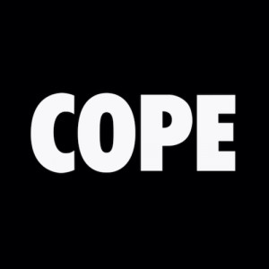

Jessy Singh
This year I was able to affirm my choice in pursuing a career as a physician. Through the COPE Health Scholars program I have been able to work alongside medical professionals to assist patients who recently experienced strokes or had a history of cardiac arrest. These patients went from a state of independence to becoming so vulnerable that they were unable to do the simplest tasks such as walking, changing their own clothes, using the restroom etc. Assisting them with these small tasks alone gave me such a strong sense of gratification and fulfillment, because I was able to help serve someone else who was going through the most vulnerable time in their life. While I was also observing the interactions between patients and Physicians, something that really caught my attention was that Physicians had to incorporate every branch of medicine into treating the patient. I learned that as a Physician you are expected to be up to date on innovations and advancements in medicine, and understand who to holistically treat a patient. These new innovations and advancements in medicine are what drive me to pursue a career as a Physician, because I will be constantly learning and bettering myself.
As an HPAC Ambassador I hope to act as a strong mentor and be a pillar of support to my fellow peers here at UCR. I hope to gain the necessary experience needed to help guide someone through their journey in their Pre-Health track. By becoming a strong mentor and resource for others I hope to also further build upon my professionalism and public speaking by presenting the various workshops that are offered by HPAC. Through these workshops I would also like to become more of a well rounded individual going into the Health field, so that I can gain more knowledge of the other career professionals that I may be working alongside in the future. I would also like to able to have a more diverse perspective on the potential routes and alternate pathways to achieve each indidvidials desired end goal as well, by providing constructive yet candid feedback to my fellow peers. By providing my own past experiences regarding extracurricualrs such as on campus organizations, professional jobs, research, and volunteering I hope to use this opportunity to also become more introspective of myself. In doing so I would also like to utilize what I have learned as an HPAC Ambassador to my own journey as well, so that I am also able to invest in my own journey to becoming a Physician.
As a student who had come from a family background where no one had spokn English or received a formal education, I felt as if I did not have the proper guidance needed to pursue a career in the Health field for the majority of my life. Once I had entered Univeristy I was able to gain access to a multidude of resources and mentors that were able to guide me through my journey of pursuing a career in medicine. As a student who is familiar with how difficult it can be to have access to professional resources, I want to be able to serve my fellow peers in assisting them with their individual journey in joining the Health field. In doing so I would be able to assist with spearheading and presenting various workshops that discuss the various aspects of each health related career, while also focusing on the careers that are not as well known in healthcare as well. I would like to provide HPAC with a diverse insight on the various careers that are available to students by contacting guest-speakers from hospitals such as X-Ray Technicians, Registered Nurses, Speech Therapists, etc. Through joining HPAC I hope to provide my fellow students a more holistic view of what the Healthcare field has to offer. I wuld also like to relay my journey in becoming a Physcian to others so they are able to learn from my past experiences as well and have the opportunity to grow from me.
Experience
Research Assistant
• Collected and analyzed data
• Ran experiments
• Spear-headed project ideas
Projects Coordinator
• Made multiple workshops
• Created a variety of informational guides
• Focused on the diversity of the hospital
• Presented various presentations
Education
UC Riverside
University of California Riverside
University of California Riverside
Portfolio
